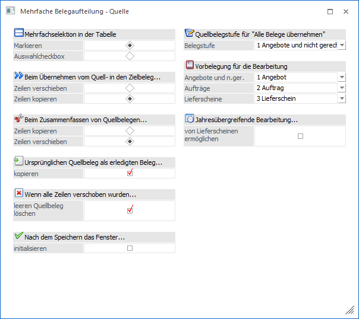
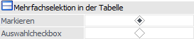
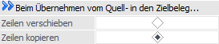
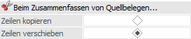
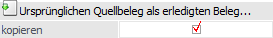
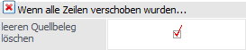
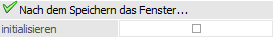
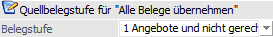
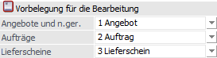
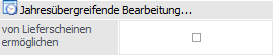

Durch Anwahl des Buttons "Optionen" im Programm "Mehrfache Belegaufteilung" stehen weitere Optionen bzw. Einstellungen zur Verfügung.
Hinweis
Die gewählten Optionen bzw. Einstellungen werden benutzerspezifisch gespeichert.

Mehrfachselektion in der Tabelle

Ø Markieren / Auswahlcheckbox
Durch Setzen des Radiobuttons wird festgelegt, ob die Belegzeilen durch Anwählen der einzelnen Zeilen oder durch Aktivieren von Checkboxen selektiert werden sollen.
Hinweis
In der WinLine mobile wird immer die Option ""Auswahlcheckbox" verwendet.
Beim Übernehmen von Zeilen vom Quell- in den Zielbeleg…

Ø Zeilen verschieben / Zeilen kopieren
Abhängig von dieser Einstellung werden Zeilen beim Übernehmen vom Quell- in den Zielbeleg entweder verschoben oder kopiert. Durch Drücken der Umschalttaste bzw. der Steuerungstaste kann diese Einstellung übersteuert werden.
Achtung
Bei gedruckten Lieferscheinen werden die Zeilen immer "verschoben", d.h. aus der Quelltabelle gelöscht. Im Lieferschein selbst werden diese Zeilen, gleich wie im Beleg splitten, mit Menge 0 belassen.
Beim Zusammenfassen von Quellbelegen…

Ø Zeilen kopieren / Zeilen verschieben
Werden im Bereich im Quellbelege Zeilen aus mehreren Belegen zusammengefasst, so kann durch diese Option bestimmt werden, ob zusammengefasste Zeilen aus dem Quellbeleg in den Zielbeleg kopiert oder verschoben werden sollen.
Ursprünglichen Quellbeleg als erledigten Beleg…

Ø Ursprünglichen Quellbeleg als erledigten Beleg kopieren
Wenn diese Option aktiviert ist, dann wird der Quellbeleg unverändert wegkopiert und als erledigter Beleg markiert.
Wenn alle Zeilen verschoben wurden…

Ø leeren Quellbeleg löschen
Wenn alle Zeilen aus dem Quellbeleg entfernt werden, wird dieser als gelöschter Beleg markiert.
Hinweis
Wenn ein Angebot oder ein Auftrag gelöscht wird, weil alle Zeilen verschoben wurden, werden eventuell schon vorhandene Zahlungszeilen nicht übernommen und müssen bei dem neuen Beleg wieder manuell erfasst werden.
Nach dem Speichern das Fenster…

Ø Nach dem Speichern das Fenster initialisieren
Wird der Button "Speichern" ausgewählt, so werden sowohl das Fenster mit den Quellbelegen als auch jene mit dem Zielbeleg initialisiert bzw. geleert.
Quellbelegstufe für "Alle Belege übernehmen"

Ø Belegstufe
Je nachdem, welche Belegstufe gewählt wurde, werden alle Angebote und nicht gerechnete Belege, Aufträge oder Lieferscheine bei Anwahl des Buttons "Alle Belege übernehmen" in die Quelltabelle übernommen.
Vorbelegung für die Bearbeitung

Ø Vorbelegung für die Bearbeitung
Diese Einstellung dient für den Aufruf des Belegerfassens bzw. des Belegdrucks. Hiermit kann entschieden werden, welche Belegstufe für den Quellbeleg bzw. Zielbelegs, beim Aufruf des Belegerfassens bzw. beim Belegdruck herangezogen werden soll, wenn der Button "Alle Belege übernehmen" gedrückt wird.
Beispiel
Die Option "3 - Lieferscheine" ist bei "Quellbelegstufe für "Alle Belege übernehmen"" gesetzt und zusätzlich ist bei "Vorbelegung für die Bearbeitung" bei Lieferschein "4 - Faktura" hinterlegt.
Wenn nun der Button "Alle Belege übernehmen" gedrückt wird, so werden alle Lieferscheine des selektierten Kontos automatisch übernommen.
Zusätzlich wird als Belegstufe für den Quellbeleg und jeden Zielbeleg automatisch die Stufe "4 - Faktura" herangezogen. Diese Belegstufe wird für den Aufruf des Belegerfassen und für den Belegdruck übernommen.
Jahresübergreifende Bearbeitung…

Ø von Lieferscheinen ermöglichen
Wenn diese Option aktiviert wird, so können auch Lieferscheine mehrerer Wirtschaftsjahre im Quellbereich geladen werden. Hierbei sind folgende Punkte zu beachten:
ü Die Belegstufe der Quelle wird auf "4 - Faktura" gestellt (die Auswahl "3 - Lieferschein" wird entfernt).
ü Lieferscheine, die Buchungen mehrerer Wirtschaftsjahre enthalten, können später nicht mehr im Belegerfassen editiert, sondern nur mehr in der Stufe "Faktura" bearbeitet werden.
ü Die bestehenden Artikeljournalzeilen werden im jeweiligen Wirtschaftsjahr auf die neue Lieferscheinnummer und ggfs. das neue Konto geändert.